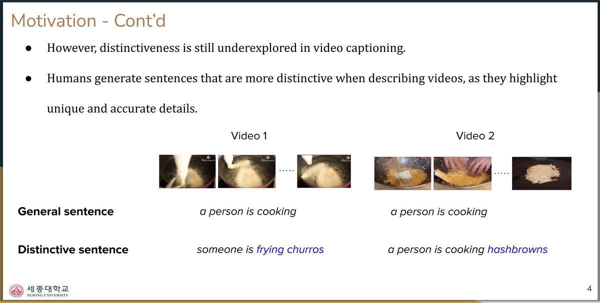
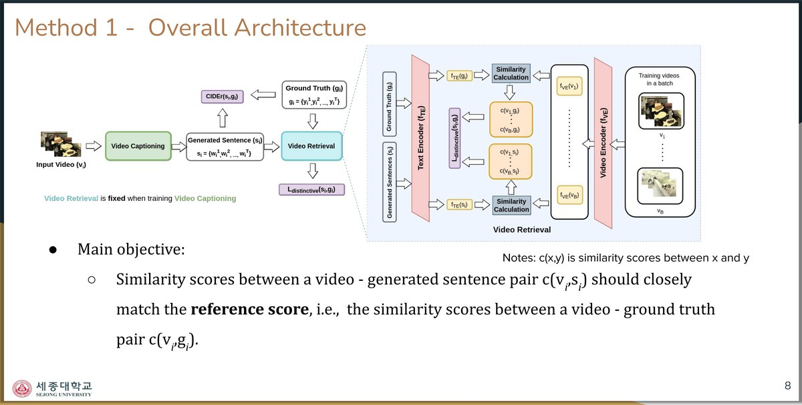
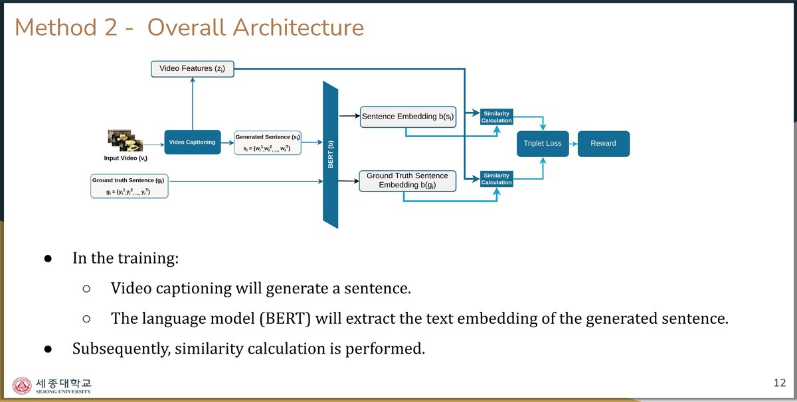
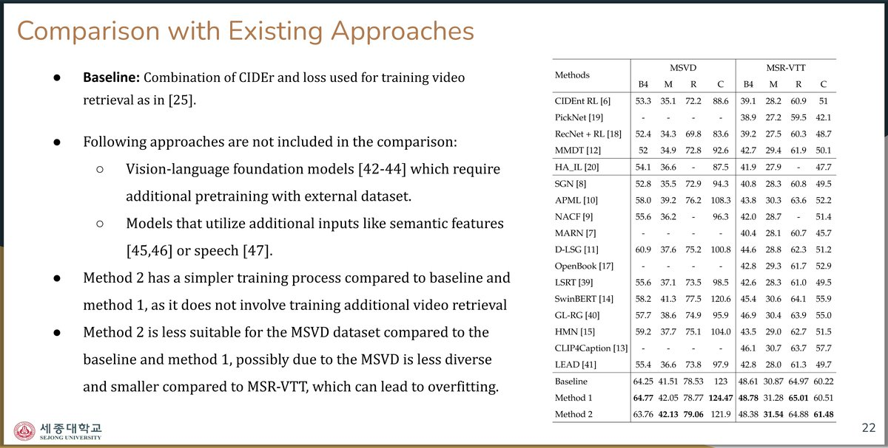
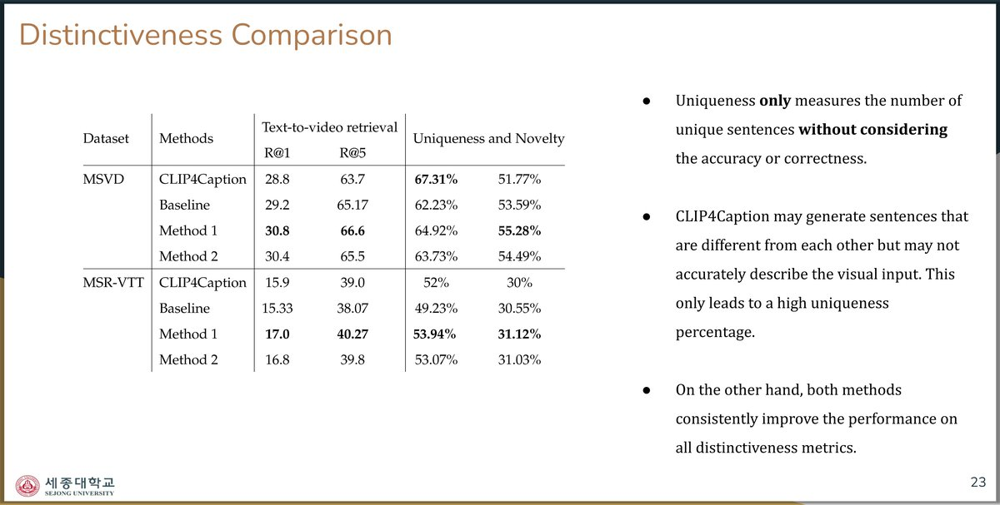
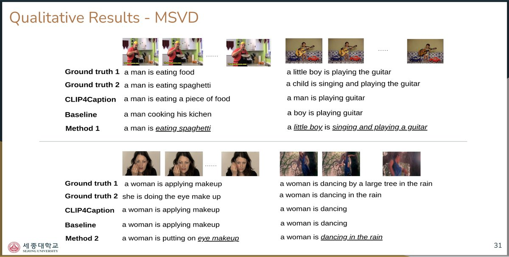
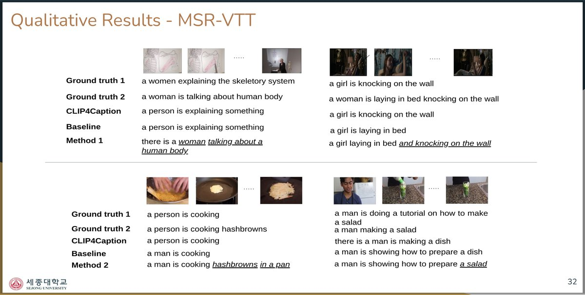

The Problem: Generic Captions

Video captioning models tend to generate generic sentences like "a person is cooking" for visually different videos.
Distinctive captions should highlight unique details — "someone is frying churros" vs. "a person is cooking hashbrowns" —
which is important for applications like visual question answering and assisting visually impaired users.
Method 1: Video Retrieval-Based Distinctiveness

Uses a pre-trained video retrieval model (CLIP4Clip) to measure text-video similarity.
The distinctiveness objective encourages generated captions to achieve similarity scores
close to those of ground truth captions, trained via REINFORCE with CIDEr + distinctiveness reward.
Method 2: Triplet Loss-Based Distinctiveness

Uses BERT sentence embeddings with a triplet loss variant. The objective simultaneously minimizes
the gap between generated and ground truth similarity, while maximizing distance from unpaired samples.
Simpler training process than Method 1 — no additional video retrieval model needed.
Results: State-of-the-Art Performance

Both methods outperform 18 existing approaches on MSVD and MSR-VTT benchmarks.
Method 1 achieves the best results on MSVD (CIDEr: 124.47, BLEU-4: 64.77),
while Method 2 leads on MSR-VTT CIDEr (61.48). Results exclude models using
external pretraining data or additional semantic inputs for fair comparison.
Distinctiveness Improvement

Key Distinctiveness Metrics
| Dataset |
Method |
R@1 |
R@5 |
Uniqueness |
Novelty |
| MSVD |
Baseline |
29.2 |
65.17 |
62.23% |
53.59% |
| Method 1 (Ours) |
30.8 |
66.6 |
64.92% |
55.28% |
| Method 2 (Ours) |
30.4 |
65.5 |
63.73% |
54.49% |
| MSR-VTT |
Baseline |
15.33 |
38.07 |
49.23% |
30.55% |
| Method 1 (Ours) |
17.0 |
40.27 |
53.94% |
31.12% |
| Method 2 (Ours) |
16.8 |
39.8 |
53.07% |
31.03% |
Both methods consistently improve all distinctiveness metrics (self-retrieval R@K, uniqueness, and novelty)
across both datasets, while also maintaining or improving caption accuracy.
Qualitative Results — MSVD

On MSVD, both methods capture specific details that baselines miss.
Method 1 correctly identifies "eating spaghetti" and "a little boy singing and playing a guitar",
while baselines produce generic captions like "eating a piece of food" or "a boy is playing guitar".
Method 2 captures "putting on eye makeup" and "dancing in the rain" where baselines only say "applying makeup" and "a woman is dancing".
Qualitative Results — MSR-VTT

On MSR-VTT, Method 1 generates "a woman talking about a human body" where baselines only say
"a person is explaining something", and captures compound actions like "laying in bed and knocking on the wall".
Method 2 identifies "cooking hashbrowns in a pan" and "showing how to prepare a salad" instead of generic "cooking" and "making a dish".
Publications
Improving Distinctiveness in Video Captioning with Text-Video Similarity
Image and Vision Computing, 2023 — First author
Action Knowledge for Video Captioning with Graph Neural Networks
Journal of King Saud University – Computer and Information Sciences, 2023 — Co-author
CLIP (ViT-B/16)
Transformer Encoder-Decoder
REINFORCE
BERT Embeddings
Triplet Loss
CIDEr Optimization
MSVD
MSR-VTT
PyTorch